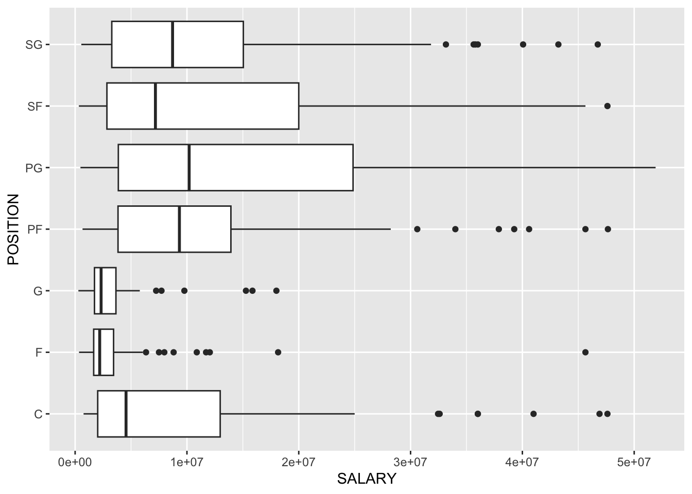
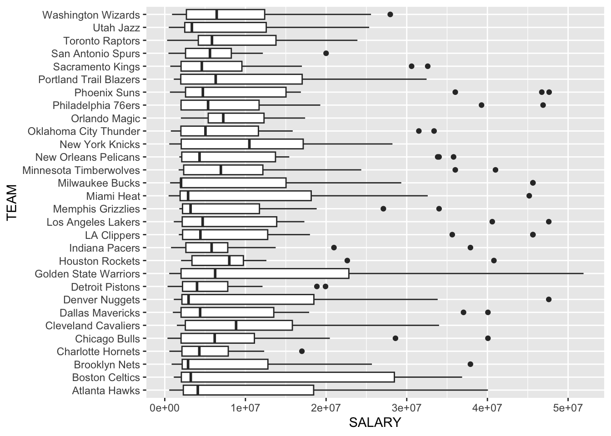

library(rvest)
library(tidyverse)NBA Salaries - Part 1: Web-Scraping
R
Web-Scraping
NBA
Data Visuals
Scraping and cleaning NBA Salary data from ESPN - NBA Players Salaries, with some simple statistic and data visuals.
0.0 Introduction
Money is a crucial element in any professional sport, and NBA players are ranked among some of the highest paid athletes in the world1. As a data scientist, having data for NBA players salaries could go a long way in many different types of analysis, and machine learning models. It is also good to practice and experience scraping different websites, and cleaning the data.
0.1 About The Data
This data comes from ESPN - NBA Players Salaries. I choose this data for a number of reasons, mainly that it includes extra information such as the player position, and team they play for.
0.2 Package Installs
To scrape and clean ESPN - NBA Players Salaries, I will use two packages:
1.0 Scraping Function
Similar to some of my other scraping function this function starts by taking in a small part of the url, in this case the url_page. It then uses that information to do the following:
- Pastes the
url_pageto the rest of the URL and reads the whole URL as HTML. - Scrapes all the “div” elements off the HTML.
- Saves the first div element.
- Uses the first row of the table as the column names.
- Removes the duplicated rows of column names.
- Removes the first row of column names.
- Adds a POSITION column.
- Removes player position in NAME column
salary.scrape <- function(url_page){
"
This function takes in the url_page and returns a df of the table on that page.
"
# save and read url
url <- base::paste0("http://www.espn.com/nba/salaries", url_page)
html <- read_html(url)
# read table
div <- html %>%
html_elements("div") %>%
html_table
# only use first table the rest are repeats or empty
tb1 <- div[[1]]
# use first row as column names
names(tb1) <- as.character(unlist(tb1[1,]))
# remove duplicate headers
tb2 <- tb1 %>%
filter(duplicated(RK) == FALSE)
# remove first row
tb3 <- tb2[-1,]
# Add position column, and remove position from name
tb3$POSITION <- sub('.*, ',"", tb3$NAME)
tb3$NAME <- sub(', [A-Z]{,2}','', tb3$NAME)
return(tb3)
}2.0 For Loop to Collect the Data into a List
ESPN - NBA Players Salaries has 13 pages of data to scrape, so to do this quickly and efficiently I am:
- Creating a string of
url_pages. - Creating an empty list for each table to be saved in.
- Created a for loop to save a table for each page into the
salary_list().
# a string of url page extensions
url_pages <- c("", "/_/page/2", "/_/page/3", "/_/page/4", "/_/page/5",
"/_/page/6", "/_/page/7", "/_/page/8", "/_/page/9",
"/_/page/10", "/_/page/11", "/_/page/12", "/_/page/13")
# empty list
salary_list <- list()
# pulls salary info from each url page
for (i in 1:length(url_pages))
{
output <- salary.scrape(url_pages[[i]])
salary_list[[i]] <- output
}3.0 Merge Data
Now that all 13 pages of data are saved into a list, I then:
- Use
rbind()to merge all the data. - Remove the last row of data, which is the column headers.
- Change Salary Column from character to numeric.
# combine all 13 pages into one list
nba_salaries_2023 <- rbind(salary_list[[1]],
salary_list[[2]],
salary_list[[3]],
salary_list[[4]],
salary_list[[5]],
salary_list[[6]],
salary_list[[7]],
salary_list[[8]],
salary_list[[9]],
salary_list[[10]],
salary_list[[11]],
salary_list[[12]],
salary_list[[13]],
by = c("RK", "NAME", "TEAM", "SALARY", "POSITION"))
# remove last row
nba_salaries_2023 <- head(nba_salaries_2023,-1)4.0 View Data
Since we have the data, might as well look at it and play with it a little. To start lets just see the highest paid NBA players:
utils::head(nba_salaries_2023, 10)# A tibble: 10 × 5
RK NAME TEAM SALARY POSITION
<chr> <chr> <chr> <chr> <chr>
1 1 Stephen Curry Golden State Warriors $51,915,615 PG
2 2 Kevin Durant Phoenix Suns $47,649,433 PF
3 3 LeBron James Los Angeles Lakers $47,607,350 SF
4 4 Nikola Jokic Denver Nuggets $47,607,350 C
5 5 Joel Embiid Philadelphia 76ers $46,900,000 C
6 6 Bradley Beal Phoenix Suns $46,741,590 SG
7 7 Giannis Antetokounmpo Milwaukee Bucks $45,640,084 PF
8 8 Damian Lillard Milwaukee Bucks $45,640,084 PG
9 9 Kawhi Leonard LA Clippers $45,640,084 SF
10 10 Paul George LA Clippers $45,640,084 F 4.1 Change Salaray from Character to Numeric
Notice that the SALARY column is a character value. This will not be helpful when trying to do math, or make graphs with this numerical data. To change this 3 things must be addressed:
- Removing the dollar sign.
- Removing the commas.
- Change character type to numeric.
nba_salaries_2023$SALARY <- str_remove_all(nba_salaries_2023$SALARY,
"\\$")
nba_salaries_2023$SALARY <- str_remove_all(nba_salaries_2023$SALARY,
",")
nba_salaries_2023$SALARY <- as.numeric(nba_salaries_2023$SALARY)Now we are able to do math, make graphs, and arrange the data by salary.
4.2 Basic Statistics
- Highest paid value : 51,915,615
- Lowest paid value : 289,542
- Median : 5e+06
- Mean : 9,925,143
- Standard Deviation : 11,295,000
4.3 Box Plots
4.3.1 2022 - 2023 Yearly Salary by Postion
ggplot2::ggplot(data = nba_salaries_2023,
mapping = ggplot2::aes(x = SALARY,
y = POSITION)) +
ggplot2::geom_boxplot()
From this visual we can see that Point Guards (PG) appear to be paid the most, while Guards (G) and Forwards (F) on average are paid the least.
4.4 2022-2023 Yearly Salary by Team
ggplot2::ggplot(data = nba_salaries_2023,
mapping = ggplot2::aes(x = SALARY,
y = TEAM)) +
ggplot2::geom_boxplot()
This plot is not the easiest to read, and might be worth sub-setting the information further. However eye-balling this visual we can see most teams pay between $2,000,000 and $15,000,000 per player with a few outliers. These outliers of course being superstar players.
5.0 Save Data
Lastly, it is important to save the data to work with in the future. To do this I used the write.csv() function to save the data as a csv.
utils::write.csv(nba_salaries_2023,
paste0("data/",
base::Sys.Date(),
"_NBA_22-23_Salaries.csv"))